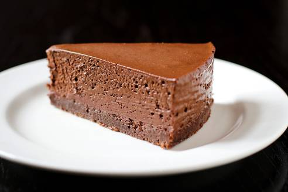

Peter Luger's Menu
Tiramisú
Tiramisu, an Italian dessert, is a delightful concoction of coffee-soaked ladyfingers layered with a creamy mascarpone cheese mixture. The dessert is often dusted with cocoa powder, giving it a rich, chocolatey finish.
Dessert Trio

Indulge in a trio of decadent desserts: the classic Tiramisu, a rich and creamy Italian dessert; the warm and gooey Chocolate Lava Cake, a chocolate lover's dream; and the elegant Crème Brûlée, with its crisp sugar crust and smooth custard filling.
American Cake
-
Cheese Cake
-

Chocolate Mousse
-

Peacan Pie
-
Key Lime Pie